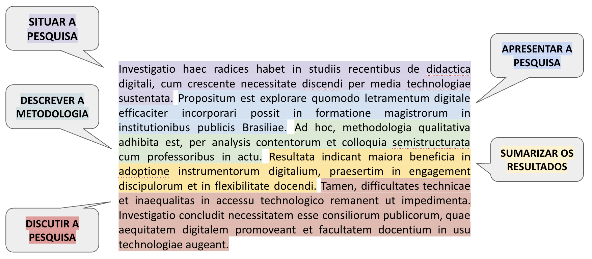

| Movimento | Submovimentos |
|---|---|
| 1. Situar a pesquisa | Estabelecer interesse no tópico |
| Fazer generalizações do tópico | |
| Citar pesquisas prévias | |
| Estender pesquisas prévias | |
| Contra-argumentar pesquisas prévias | |
| Indicar lacunas em pesquisas prévias | |
| 2. Apresentar a pesquisa | Indicar as principais características |
| Apresentar objetivo(s) | |
| Levantar hipótese(s) | |
| 3. Descrever a metodologia | Apresentar procedimento(s) |
| 4. Sumarizar os resultados | Apontar principais achados |
| 5. Discutir a pesquisa | Apresentar conclusão(ões) |
| Recomendar aplicação(ões) futura(s) | |
| a Fonte: Adaptado de Motta-Roth e Rabuske (2010). |
14 O que é um resumo científico?
Roteiro de aula elaborado no RStudio com o auxílio da inteligência artificial ChatGPT e supervisionado pelo professor antes de sua publicação.
14.1 Contextualização
Ao final deste encontro, espera-se que você seja capaz de:
- Compreender a função do resumo no contexto acadêmico;
- Identificar os movimentos retóricos típicos do gênero resumo;
Leitura indicada
Gêneros acadêmicos (p. 67–72), capítulo do livro Leitura e escrita acadêmicas, de Nádia Studzinski Estima de Castro e colaboradores. Disponível na Minha Biblioteca.
Abstract/resumo acadêmico (p. 151-162), capítulo do livro Produção textual na universidade, de Désirée Motta-Roth e Graciela Rabuske Hendge. Disponível na Biblioteca Física.
14.2 Foco na leitura
Gêneros textuais
- são realizações linguísticas concretas definidas por propriedades sociocomunicativas;
- constituem textos empiricamente realizados, cumprindo funções em situações comunicativas;
- a sua nomeação abrange um conjunto aberto e praticamente ilimitado de designações concretas determinadas por canal, estilo, conteúdo, composição e função.
Compreender o funcionamento dos gêneros acadêmicos exige não apenas o reconhecimento de suas funções sociocomunicativas, mas também a análise de como essas funções se concretizam linguisticamente. É nesse ponto que entra o conceito de estrutura retórica.
A partir de Swales (2004)1, pode-se definir estrutura retórica como a organização funcional de um gênero textual em movimentos retóricos recorrentes, orientados para o cumprimento de objetivos comunicativos específicos. Essa estrutura considera o contexto de produção, a audiência e as convenções disciplinares ou culturais da comunidade discursiva a que pertence o gênero.
Ainda em linha com Swales (2004), um movimento retórico é uma unidade discursiva que desempenha uma função comunicativa coerente em um discurso escrito ou oral.

Agora vamos aprofundar nosso conhecimento sobre a estrutura retórica de alguns dos gêneros textuais mais recorrentes na esfera universitária, a começar pelo resumo.
O resumo - ou abstract, em inglês - é um gênero textual que sintetiza as informações mais relevantes de um trabalho científico. Esse gênero pode ocorrer de maneira autônoma, como em resumos publicados isoladamente nos anais de eventos acadêmicos ou em bancos de dados, ou ainda integrar outras produções científicas, como artigos, relatórios técnicos, dissertações e teses, funcionando como parte estratégica do texto completo.
Como sintetizam Motta-Roth e Rabuske (2010), para que cumpra seu papel com clareza e eficácia, o resumo precisa organizar-se em movimentos retóricos específicos, que orientam o leitor quanto ao contexto da pesquisa, aos objetivos e métodos empregados, e aos principais resultados alcançados.

Analise a tabela abaixo. Trata-se dos movimentos retóricos do resumo científico, como identificado por Motta-Roth e Rabuske (2010). Observe que, em alguns casos, os movimentos têm diferentes submovimentos.
14.3 Aprendizagem prática
Identificação
Quais são os movimentos retóricos do resumo científico?
Para cada exemplo abaixo, selecione o submovimento retórico que melhor o representa. Depois, clique no botão “Verificar respostas”. Você verá seu total de acertos.
| Exemplo | Submovimento retórico |
|---|
14.4 Aprendizagem prática
Identificação
Quais são os movimentos retóricos do resumo científico?
Para esta atividade, selecione um artigo científico completo que atenda aos seguintes critérios:
✦ Esteja **relacionado ao seu tema de pesquisa**.\
✦ Tenha sido **publicado em periódico científico classificado como A ou B** no Qualis (última atualização disponível).\
✦ Esteja **disponível em acesso aberto**.\
✦ Tenha passado por **revisão por pares** (peer-reviewed).\
✦ Tenha um **resumo explícito**, preferencialmente em português.Copie o texto integral do resumo e cole no campo apropriado do formulário abaixo.
Realize a segmentação do resumo conforme os cinco movimentos retóricos propostos.
Para cada movimento identificado, copie e cole no campo correspondente o(s) trecho(s) que o representa(m); e classifique-o segundo as opções disponíveis no formulário.
Se um movimento não estiver presente no resumo, indique isso no formulário, selecionando a opção “Movimento não acontece”.
Se houver um movimento cuja classificação não esteja disponível, nomeie-o no campo adequado.
üìå Recomenda√ß√µes importantes:
Certifique-se de analisar criticamente o resumo, considerando a função comunicativa de cada trecho e não apenas marcadores superficiais.
Esta atividade visa o desenvolvimento da consciência retórica, contribuindo para a sua própria capacidade de escrever bons resumos científicos no futuro.
A análise deve ser feita individualmente, com base nos princípios estudados em aula.
SWALES, J. M. Research Genres Explorations and Applications. Cambridge: Cambridge University Press, 2004.↩︎